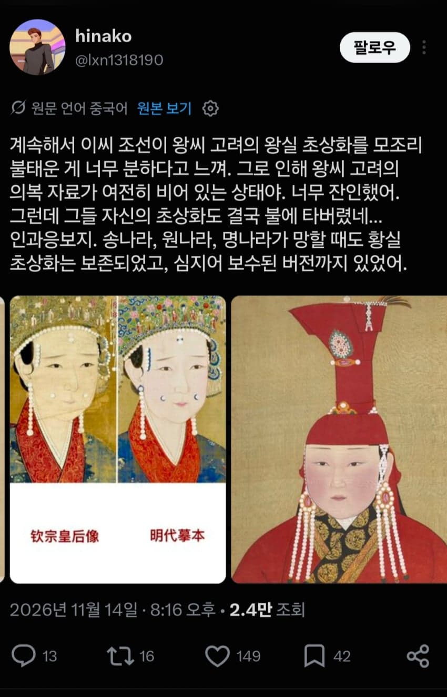
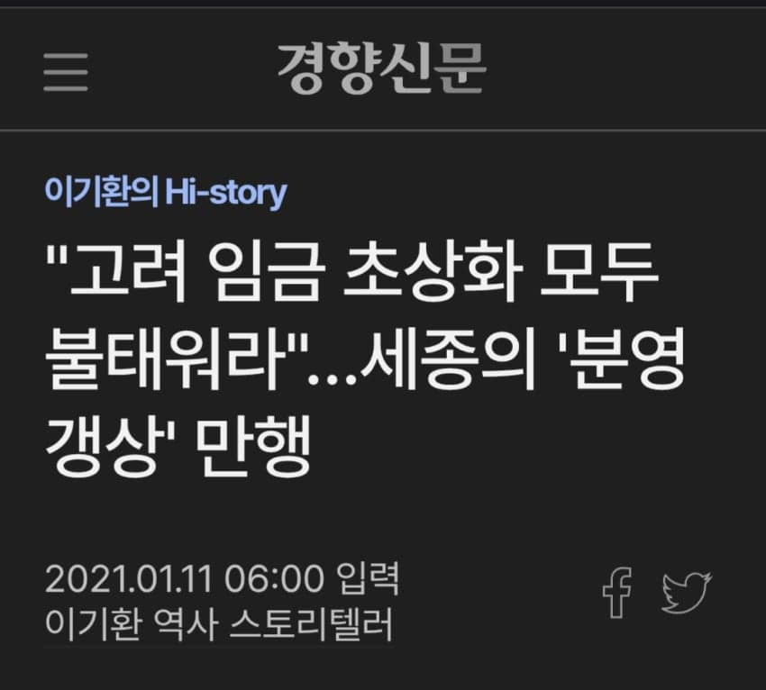
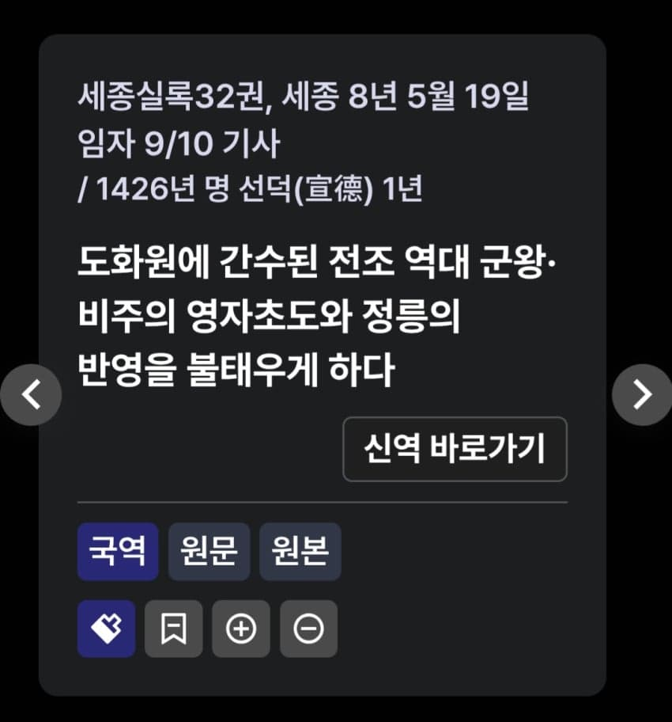
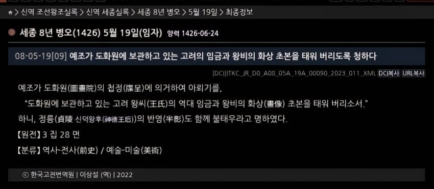
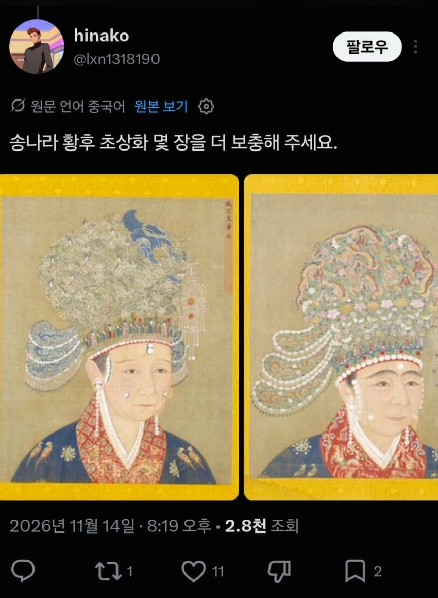
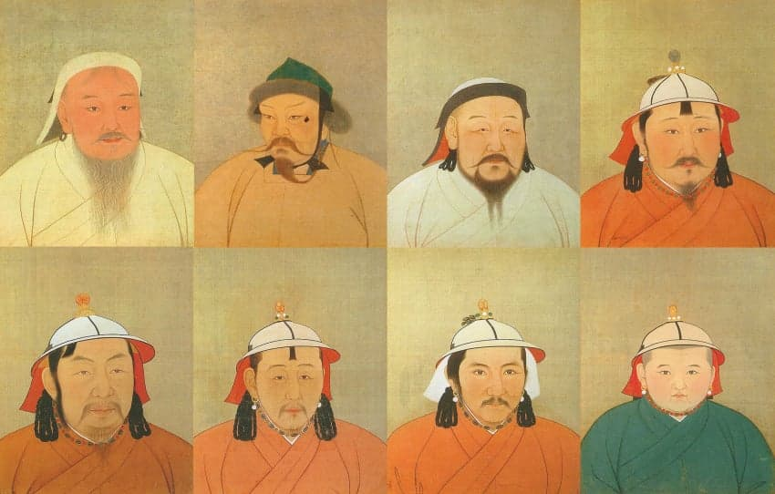
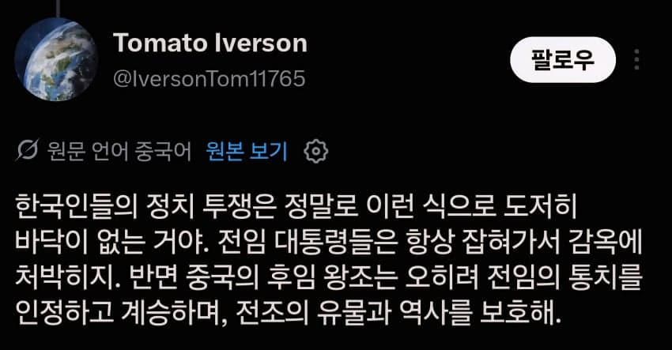
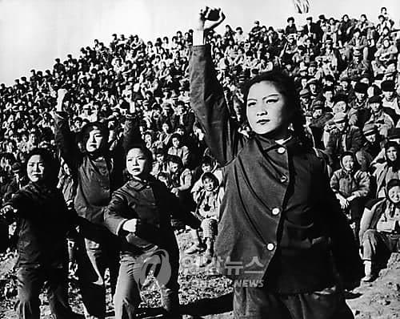

고려 왕조의 초상화들을 체계적으로 불태워버린
소위 '분영갱상'의 만행을 중국인들이 안타까워한다고 함
송, 원, 명 등 중화왕조들의 경우에는 일어나지 않은 일이라
더더욱 그렇다고 함
단순히 옛날엔 다들 그랬다고 치부할 일이 아니라는 것


이처럼 도화원에 보관되어 있던 고려왕조 초상화들을
고려가 없어지고 한 세대가 지난 시점인데도
굳이굳이 파괴한 게 조선 (더 구체적으론 세종) 인데

고려와 같은 시기에 존재한 송나라의 경우
황실의 초상화들이 멀쩡히 남아있다고...

몽골의 정복으로 성립한 원나라 황제들의 초상화 역시
몽골이 쫓겨난 후에도 파괴되는 일은 없었다고 함
이민족이 세운 것도 아닌 고려왕조의 초상화가 파괴당한 게
더더욱 특이하게 느껴지는 부분임

그래서 한국은 기록문화가 충분히 성숙하지 못한 나라, 역사적 단절성이 매우 심한 나라라고
중국인들은 인식한다고 함

한국인들은 문화대혁명에 관심이 많다 보니
중국 = 정치적 광기로 문화재를 잃은 나라라고 생각하지만
중국인들은 오히려 한국을 그렇게 생각하고 있는 거
- dc official App
댓글
수집 당시 댓글 500개
ㅇㅇ · 11.17 00:48:44
ㅇㅇ · 11.17 00:51:05
ㅇㅇ · 11.17 00:57:08
ㅇㅇ · 11.17 01:00:15
· ㅇㅇ · 11.17 01:05:46
ㅇㅇ · 11.17 01:05:13
주소킹 · 11.17 01:06:17
ㅇㅇ · 11.17 01:11:05
ㅇㅇ · 11.17 01:18:41
ㅇㅇ · 11.17 01:44:06
ㅇㅇ · 11.17 01:59:03
· ㅇㅇ · 11.17 02:19:18
ㅇㅇ · 11.17 02:32:41
ㅇㅇ · 11.17 02:45:24
ㅇㅇ · 11.17 02:45:29
ㅇㅇ · 11.17 02:56:21
ㅇㅇ · 11.17 03:15:32
· ㅇㅇ · 11.17 03:18:18
· ㅇㅇ · 11.17 11:42:25
양자인간 · 11.17 03:18:00
ㅇㅇ · 11.17 03:23:35
킹종대왕
ㅇㅇ · 11.17 03:37:57
ㅇㅇ · 11.17 04:06:58
ㅇㅇ · 11.17 04:25:18
주소킹 · 11.17 04:45:15
ㅇㅇ · 11.17 05:05:30
ㅇㅇ · 11.17 05:06:18
ㅇㅇ · 11.17 05:15:24
ㅇㅇ · 11.17 05:37:27
o o · 11.17 06:42:42
o o · 11.17 06:43:07
o o · 11.17 06:43:19
o o · 11.17 06:43:38
o o · 11.17 06:43:42
o o · 11.17 06:43:47
o o · 11.17 06:43:52
o o · 11.17 06:43:57
o o · 11.17 06:59:13
o o · 11.17 06:59:25
o o · 11.17 06:59:36
o o · 11.17 06:59:55
o o · 11.17 07:00:06
o o · 11.17 07:00:29
o o · 11.17 07:00:43
o o · 11.17 07:01:03
o o · 11.17 07:01:19
o o · 11.17 07:01:35
o o · 11.17 07:01:44
o o · 11.17 07:01:54
o o · 11.17 07:02:09
o o · 11.17 07:02:24
o o · 11.17 07:02:43
o o · 11.17 07:02:53
o o · 11.17 07:03:12
o o · 11.17 07:03:21
o o · 11.17 07:03:30
o o · 11.17 07:03:43
o o · 11.17 07:04:00
o o · 11.17 07:04:04
o o · 11.17 07:04:10
ㅇㅇ · 11.17 07:15:47
ㅇㅇ · 11.17 07:42:54
ㅇㅇ · 11.17 07:48:17
· ㅇㅇ · 11.17 07:49:54
· ㅇㅇ · 11.17 08:19:57
· ㅂㅂ · 11.17 08:37:11
· ㅇㅇ · 11.17 09:18:08
· ㅇㅇ · 11.17 10:20:50
· ㅇㅇ · 11.17 11:20:14
· ㅂㅂ · 11.17 15:58:24
ㅇㅇ · 11.17 08:07:43
ㅇㅇ · 11.17 08:33:41
ㅇㅇ · 11.17 08:53:07
ㅇㅇ · 11.17 09:11:05
ㅇㅇ · 11.17 09:11:06
ㅇㅇ · 11.17 09:25:07
· ㅇㅇ · 11.17 09:26:00
ㅇㅇ · 11.17 09:27:51
중국이 5천만이면 그것이 한국
ㅇㅇ · 11.17 09:40:43
ㅇㅇ · 11.17 10:08:55
ㅇㅇ · 11.17 10:15:03
실비치노 · 11.17 10:24:49
니가왜저능아냐몀 · 11.17 11:00:46
ㅇㅇ · 11.17 11:02:21
ㅇㅇ · 11.17 11:16:31
· ㅇㅇ · 11.17 11:22:28
ㅇㅇ · 11.17 11:20:48
hawaii50 · 11.17 11:21:15
ㅇㅇ · 11.17 11:21:49
ㅇㅇ · 11.17 12:12:39
씹센징
ㅇㅇ · 11.17 12:13:02
씹미개 춋센
ㅇㅇ · 11.17 12:20:57
· ㅇㅇ · 11.17 12:51:19
ㅇㅇ · 11.17 13:57:39
ㅇㅇ · 11.17 19:08:58
ㅇㅇ · 11.17 19:09:42
ㅇㅇ · 11.17 19:09:54
ㅇㅇ · 11.17 19:10:12
ㅇㅇ · 11.17 19:45:33
ㅇㅇ · 11.17 19:53:15
ㅇㅇ · 11.16 22:48:57
ㅇㅇ · 11.16 22:49:06
· 겐쉰프 · 11.16 22:50:01
· ㅇㅇ · 11.16 22:51:48
· ㅇㅇ · 11.16 23:48:01
· ㅇㅇ · 11.16 23:54:44
ㅇㅇ · 11.16 22:49:35
· ㅇㅇ · 11.16 22:51:51
ㅇㅇ · 11.16 22:50:01
ㅇㅇ · 11.16 22:50:20
ㅇㅇ · 11.16 22:51:26
· ㅇㅇ · 11.16 22:51:48
· ㅇㅇ · 11.16 22:52:06
ㅇㅇ · 11.16 22:52:50
ㅇㅇ · 11.16 22:53:23
· ㅇㅇ · 11.16 22:53:44
· ㅇㅇ · 11.16 22:56:05
· ㅇㅇ · 11.16 22:59:18
ㅇㅇ · 11.16 22:54:26
ㅇㅇ · 11.16 22:57:44
· ㅇㅇ · 11.16 23:56:16
· ㅇㅇ · 11.16 23:56:22
ㅇㅇ · 11.16 23:02:17
ㅇㅇ · 11.16 23:02:26
· ㅇㅇ · 11.16 23:02:40
ㅇㅇ · 11.16 23:02:33
· ㅇㅇ · 11.16 23:19:41
ㅇㅇ · 11.16 23:05:33
ㅇㅇ · 11.16 23:05:58
· ㅇㅇ · 11.16 23:06:08
· ㅇㅇ · 11.16 23:55:21
· ㅇㅇ · 11.16 23:56:39
씹덕1017일차 · 11.16 23:08:23
· 씹덕1017일차 · 11.16 23:08:29
ㅇㅇ · 11.16 23:09:54
ㅇㅇ · 11.16 23:10:02
ㅇㅇ · 11.16 23:10:57
· ㅇㅇ · 11.16 23:56:31
ㅇㅇ · 11.16 23:11:11
ㅇㅇ · 11.16 23:11:26
ㅇㅇ · 11.16 23:13:41
· ㅇㅇ · 11.16 23:16:43
· ㅇㅇ · 11.16 23:18:18
· ㅇㅇ · 11.17 03:34:31
ㅇㅇ · 11.16 23:13:53
ㅇㅇ · 11.16 23:15:38
· ㅇㅇ · 11.16 23:19:58
· ㅇㅇ · 11.16 23:21:49
· ㅇㅇ · 11.16 23:33:49
ㅇㅇ · 11.16 23:15:47
ㅇㅇ · 11.16 23:16:25
ㅇㅇ · 11.16 23:17:31
· ㅇㅇ · 11.17 00:57:25
ㅇㅇ · 11.16 23:17:54
ㅇㅇ · 11.16 23:23:27
· ㅇㅇ · 11.16 23:50:25
ㅇㅇ · 11.16 23:29:45
· ㅇㅇ · 11.16 23:31:05
· ㅇㅇ · 11.17 00:54:09
ㅇㅇ · 11.16 23:29:47
· ㅇㅇ · 11.17 07:16:56
· ㅇㅇ · 11.17 07:22:53
ㅇㅇ · 11.16 23:30:27
ㅇㅇ · 11.16 23:32:51
ㅇㅇ · 11.16 23:34:27
· ㅇㅇ · 11.16 23:35:05
· ㅇㅇㅇ · 11.17 02:26:40
ㅇㅇ · 11.16 23:35:21
ㅇㅇ · 11.16 23:38:26
· ㅇㅇ · 11.16 23:45:14
· ㅇㅇ · 11.16 23:47:45
삭제됨 · 11.16 23:39:16
· ㅇㅇ · 11.16 23:42:16
· ㅇㅇ · 11.16 23:53:31
· ㅇㅇ · 11.16 23:59:06
· ㅇㅇ · 11.17 00:16:33
겐쉰프 · 11.16 23:43:56
착취의손아귀 · 11.16 23:52:35
· 착취의손아귀 · 11.16 23:52:47
· 착취의손아귀 · 11.16 23:53:01
· ㅇㅇ · 11.17 00:06:00
· ㅇㅇ · 11.17 00:06:45
ㅇㅇ · 11.16 23:52:46
ㅇㅇ · 11.16 23:53:54
ㅇㅇ · 11.16 23:54:11
ㅇㅇ · 11.16 23:54:28
ㅇㅇ · 11.16 23:56:53
ㅇㅇ · 11.16 23:56:58
ㅇㅇ · 11.17 00:01:26
ㅇㅇ · 11.17 00:09:26
ㅇㅇ · 11.17 00:12:30
· ㅇㅇ · 11.17 00:19:10
· ㅇㅇ · 11.17 00:20:19
ㅇㅇ · 11.17 00:14:36
ㅇㅇ · 11.17 00:23:03
ㅇㅇ · 11.17 00:23:29
환란 전 교회 휴거 · 11.17 00:32:17
ㅇㅇ · 11.17 00:32:57
· ㅇㅇ · 11.17 00:34:05
ㄹ · 11.17 00:46:18
ㅇㅇ · 11.16 22:26:58
· ㅇㅇ · 11.16 22:27:57
· ㅇㅇ · 11.16 22:28:49
· ㅇㅇ · 11.16 22:32:46
· ㅇㅇ · 11.16 22:37:16
삭제됨 · 11.16 22:28:38
· ㅇㅇ · 11.16 22:32:58
ㅇㅇ · 11.16 22:29:07
· ㅇㅇ · 11.16 22:33:25
· ㅇㅇ · 11.16 22:35:42
· ㅇㅇ · 11.16 22:36:08
ㅇㅇ · 11.16 22:29:41
· ㅇㅇ · 11.16 22:58:10
ㅇㅇ · 11.16 22:30:11
· 겐쉰프 · 11.16 22:43:41
ㅇㅇ · 11.16 22:30:18
ㅇㅇ · 11.16 22:30:23
ㅇㅇ · 11.16 22:30:30
ㅇㅇ · 11.16 22:31:08
철한자9 · 11.16 22:32:08
ㅇㅇ · 11.16 22:32:32
· ㅇㅇ · 11.16 22:33:39
· ㅇㅇ · 11.16 22:37:47
· 겐쉰프 · 11.16 22:43:26
겐쉰프 · 11.16 22:33:10
겐쉰프 · 11.16 22:33:26
겐쉰프 · 11.16 22:33:48
겐쉰프 · 11.16 22:34:01
겐쉰프 · 11.16 22:34:11
ㅇㅇ · 11.16 22:34:13
겐쉰프 · 11.16 22:34:54
겐쉰프 · 11.16 22:35:13
겐쉰프 · 11.16 22:35:47
ㅇㅇ · 11.16 22:36:36
· ㅇㅇ · 11.16 22:40:08
ㅇㅇ · 11.16 22:37:30
· ㅇㅇ · 11.16 22:39:59
· ㅇㅇ · 11.16 22:43:21
ㅇㅇ · 11.16 22:37:38
ㅇㅇ · 11.16 22:40:28
겐쉰프 · 11.16 22:40:50
겐쉰프 · 11.16 22:41:22
ㅇㅇ · 11.16 22:41:31
· ㅇㅇ · 11.16 22:42:05
ㅇㅇ · 11.16 22:41:55
· ㅇㅇ · 11.16 22:43:11
ㅇㅇ · 11.16 22:42:11
· 겐쉰프 · 11.16 22:42:56
· 겐쉰프 · 11.16 22:43:08
· ㅇㅇ · 11.16 22:45:56
· ㅇㅇ · 11.16 22:46:29
· ㅇㅇ · 11.16 22:47:00
· 겐쉰프 · 11.16 22:47:15
· 겐쉰프 · 11.16 22:48:06
· 겐쉰프 · 11.16 22:49:07
· ㅇㅇ · 11.16 22:51:30
· 겐쉰프 · 11.16 22:52:14
· 겐쉰프 · 11.16 22:52:52
· ㅇㅇ · 11.16 22:53:05
· 겐쉰프 · 11.16 22:53:10
· 겐쉰프 · 11.16 22:53:26
· ㅇㅇ · 11.16 22:53:32
· 겐쉰프 · 11.16 22:54:02
· 겐쉰프 · 11.16 22:54:16
· 겐쉰프 · 11.16 22:54:37
· ㅇㅇ · 11.16 22:54:53
· 겐쉰프 · 11.16 22:55:28
· 겐쉰프 · 11.16 22:56:07
· 겐쉰프 · 11.16 22:56:33
· ㅇㅇ · 11.16 23:32:10
· 겐쉰프 · 11.16 23:39:12
· 겐쉰프 · 11.16 23:40:58
· ㅇㅇ · 11.16 23:43:59
· ㅇㅇ · 11.16 23:44:03
· 겐쉰프 · 11.16 23:44:27
· ㅇㅇ · 11.16 23:45:53
· ㅇㅇ · 11.16 23:46:26
ㅇㅇ · 11.16 22:43:21
· ㅇㅇ · 11.16 23:52:33
나바둑 · 11.16 22:43:58
· 겐쉰프 · 11.16 22:44:54
· ㅇㅇ · 11.16 23:54:13
ㅇㅇ · 11.16 22:44:02
· 겐쉰프 · 11.16 22:44:22
· ㅇㅇ · 11.16 22:44:25
· ㅇㅇ · 11.16 22:44:50
· . · 11.16 22:52:30
· ㅇㅇ · 11.16 22:53:39
· ㅇㅇ · 11.16 23:54:25
· ㅇㅇ · 11.16 23:54:32
ㅇㅇ · 11.16 22:44:47
Adriel · 11.16 22:46:29
ㅇㅇ · 11.16 22:46:35
펜도르 · 11.16 22:47:40
· 겐쉰프 · 11.16 22:49:45
ㅇㅇ · 11.16 22:48:09
· ㅇㅇ · 11.16 22:48:14
· 겐쉰프 · 11.16 22:49:55
· ㅇㅇ · 11.16 22:50:26
· ㅇㅇ · 11.16 23:54:37
· ㅇㅇ · 11.16 23:38:50
· ㅇㅇ · 11.16 23:39:28
· ㅇㅇ · 11.16 23:41:40
· ㅇㅇ · 11.16 23:42:56
· ㅇㅇ · 11.16 23:44:08
· ㅇㅇ · 11.16 23:48:14
· ㅇㅇ · 11.16 23:51:00
· ㅇㅇ · 11.16 23:51:03
· ㅇㅇ · 11.16 23:52:44
· ㅇㅇ · 11.16 23:53:12
· ㅇㅇ · 11.16 23:55:33
· ㅇㅇ · 11.16 23:55:41
· ㅇㅇ · 11.16 23:57:00
· ㅇㅇ · 11.16 23:57:37
· ㅇㅇ · 11.16 23:59:50
· ㅇㅇ · 11.17 00:00:40
· ㅇㅇ · 11.17 00:01:10
· ㅇㅇ · 11.17 00:02:48
· ㅇㅇ · 11.17 00:03:32
· ㅇㅇ · 11.17 00:04:42
· ㅇㅇ · 11.17 00:04:47
· ㅇㅇ · 11.17 00:06:12
· ㅇㅇ · 11.17 00:07:49
· ㅇㅇ · 11.17 00:23:24
· ㅇㅇ · 11.17 01:45:37
· ㅇㅇ · 11.17 02:16:40
· ㅇㅇ · 11.17 12:05:14
· ㅇㅇ · 11.17 14:46:40
ㅇㅇ · 11.16 22:15:13
겐쉰프 · 11.16 22:15:19
겐쉰프 · 11.16 22:15:38
야룽이 · 11.16 22:15:48
ㅇㅇ · 11.16 22:16:17
· ㅇㅇ · 11.16 22:16:43
실베현자 · 11.16 22:16:25
ㄴㅇㅁ · 11.16 22:16:37
つついあやめのおっと · 11.16 22:16:41
· つついあやめのおっと · 11.16 22:26:36
· ㅇㅇ · 11.16 22:28:35
· つついあやめのおっと · 11.16 22:30:37
· 211.108 · 11.16 23:09:05
· ㅇㅇ · 11.16 23:39:54
· ㅇㅇ · 11.16 23:41:47
· つついあやめのおっと · 11.16 23:42:45
· ㅇㅇ · 11.17 00:08:20
· ㅇㅇ · 11.17 00:12:28
· つついあやめのおっと · 11.17 01:26:46
ㅇㅇ · 11.16 22:16:44
ㅇㅇ · 11.16 22:16:52
ㅇㅇ · 11.16 22:17:03
ㅇㅇ · 11.16 22:17:29
ㅇㅇ · 11.16 22:17:40
· ㅇㅇ · 11.16 22:17:44
· ㅇㅇ · 11.16 22:17:47
ㅇㅇ · 11.16 22:17:45
ㅇㅇ · 11.16 22:17:46
ㅇㅇ · 11.16 22:17:54
ㅇㅇ · 11.16 22:18:53
ㅇㅇ · 11.16 22:19:18
ㅇㅇ · 11.16 22:19:23
· ㅇㅇ · 11.16 22:20:18
· ㅇㅇ · 11.16 22:49:31
ㅇㅇ · 11.16 22:19:28
ㅇㅇ · 11.16 22:19:35
ㅇㅇ · 11.16 22:20:02
ㅇㅇ · 11.16 22:20:29
ㅇㅇ · 11.16 22:20:37
ㅇㅇ · 11.16 22:20:45
ㅇㅇ · 11.16 22:20:57
ㅇㅇ · 11.16 22:21:33
ㅇㅇ · 11.16 22:21:52
· ㅇㅇ · 11.16 22:22:01
· . · 11.16 22:51:10
공정성장 · 11.16 22:22:03
ㅇㅇ · 11.16 22:22:30
· ㅇㅇ · 11.16 22:28:21
ㅇㅇ · 11.16 22:22:39
ㅇㅇ · 11.16 22:22:50
ㅇㅇ · 11.16 22:22:53
백도어킹 · 11.16 22:23:38
· ㅇㅇ · 11.16 22:52:27
· ㅇㅇ · 11.16 23:57:11
· ㅇㅇ · 11.16 23:58:37
ㅇㅇ · 11.16 22:23:43
ㅇㅇ · 11.16 22:23:47
· ㅇㅇ · 11.16 22:25:56
ㅇㅇ · 11.16 22:24:43
· ㅇㅇ · 11.16 22:25:14
ㅇㅇ · 11.16 22:24:51
· ㅇㅇ · 11.16 23:58:49
ㅇㅇ · 11.16 22:25:15
ㅇㅇ · 11.16 22:25:22
· 겐쉰프 · 11.16 22:43:59
ㅇㅇ · 11.16 22:25:28
ㅇㅇ · 11.16 22:25:44
· ㅇㅇ · 11.16 22:25:56
· ㅇㅇ · 11.16 22:27:07
· ㅇㅇ · 11.16 23:59:55
ㅇㅇ · 11.16 22:26:00
알카 · 11.16 22:26:26
수류탄이야 · 11.16 11:53:45
· ㅇㅇ · 11.16 17:02:03
· ㅇㅇ · 11.16 17:49:45
· ㅇㅇ · 11.16 22:20:51
ㅇㅇ · 11.16 11:56:26
· ㅇㅇ · 11.17 00:01:37
ㅇㅇ · 11.16 12:00:33
ㅇㅇ · 11.16 12:04:41
헥사 · 11.16 12:06:22
· ㅇㅇ · 11.16 22:13:12
· ㅇㅇ · 11.16 22:21:35
ㅇㅇ · 11.16 17:01:31
ㅇㅇ · 11.16 17:18:01
적반하장은 짱깨평균ㅇㅇ
ㅇㅇ · 11.16 17:22:19
2456778 · 11.16 22:10:51
봇치쟝 · 11.16 22:10:53
겐쉰프 · 11.16 22:11:49
· ㅇㅇ · 11.16 22:16:27
· ㅇㅇ · 11.16 22:25:20
Кошечка · 11.16 22:11:51
· ㅇㅇ · 11.16 22:12:16
ㄴㅇㅁ · 11.16 22:11:57
겐쉰프 · 11.16 22:12:02
ㅇㅇ · 11.16 22:12:03
· ㅇㅇ · 11.16 22:13:32
· ㅇㅇ · 11.16 22:31:20
ㅇㅇ · 11.16 22:12:09
· ㅇㅇ · 11.16 22:12:36
· ㅇㅇ · 11.16 22:13:12
· ㅇㅇ · 11.16 22:26:10
· ㅇㅇ · 11.17 04:20:05
ㅇㅇ · 11.16 22:12:14
ㅇㅇ · 11.16 22:12:16
털보 · 11.16 22:12:20
ㅇㅇ · 11.16 22:12:23
· 겐쉰프 · 11.16 22:14:11
· Jasmin. · 11.16 22:29:49
ㅇㅇ · 11.16 22:12:29
겐쉰프 · 11.16 22:12:51
ㅇㅇ · 11.16 22:12:56
찢 · 11.16 22:13:03
ㅇㅇ · 11.16 22:13:06
겐쉰프 · 11.16 22:13:08
ㅇㅇ · 11.16 22:13:18
· ㅇㅇ · 11.16 22:13:23
겐쉰프 · 11.16 22:13:21
겐쉰프 · 11.16 22:13:34
말들갑왕 · 11.16 22:13:54
· ㅇㅇ · 11.17 00:01:52
ㅇㅇ · 11.16 22:14:05
· ㅇㅇ · 11.16 22:14:42
ㅇㅇ · 11.16 22:14:10
ㅇㅇ · 11.16 22:14:28
노비종모법 만든 새끼가 좃으로 보여?
· ㅇㅇ · 11.16 22:15:05
종부법 카운터용이라는 변명 안통함
· ㅇㅇ · 11.16 22:15:46
걍 자국민세습노예제가 병신임
ㅇㅇ · 11.16 22:14:31
ㅇㅇ · 11.16 22:14:36
· ㅇㅇ · 11.16 22:15:03
겐쉰프 · 11.16 22:14:50
ㅇㅇ · 11.16 22:14:57
ㅇㅇ · 11.16 22:15:00
겐쉰프 · 11.16 22:15:07
ㅇㅇ · 11.16 22:15:10
· ㅇㅇ · 11.16 22:16:46
· Jasmin. · 11.16 22:31:29
· ㅇㅇ · 11.16 22:32:49
· ㅇㅇ · 11.16 22:40:03
· ㅇㅇ · 11.16 22:40:24
· ㅇㅇ · 11.16 22:48:00
· ㅇㅇ · 11.16 22:52:35
· ㅇㅇ · 11.16 22:57:19
· ㅇㅇ · 11.16 22:58:50
· ㅇㅇ · 11.16 23:00:04
· ㅇㅇ · 11.16 23:01:44
· ㅇㅇ · 11.16 23:02:55
· ㅇㅇ · 11.16 23:03:47
· ㅇㅇ · 11.16 23:04:44
· ㅇㅇ · 11.16 23:05:27
· ㅇㅇ · 11.16 23:07:08
· ㅇㅇ · 11.16 23:11:40
· ㅇㅇ · 11.16 23:16:22
· ㅇㅇ · 11.16 23:17:34
· ㅇㅇ · 11.16 23:18:58
· ㅇㅇ · 11.16 23:19:29
· ㅇㅇ · 11.16 23:20:36
· ㅇㅇ · 11.16 23:21:22
· ㅇㅇ · 11.16 23:23:14
· ㅇㅇ · 11.16 23:25:38
· ㅇㅇ · 11.16 23:27:54
· ㅇㅇ · 11.16 23:29:00
· ㅇㅇ · 11.16 23:29:39
· ㅇㅇ · 11.16 23:30:53
· ㅇㅇ · 11.16 23:31:13
· ㅇㅇ · 11.16 23:31:48
· ㅇㅇ · 11.16 23:32:58
· ㅇㅇ · 11.16 23:33:44
· ㅇㅇ · 11.16 23:35:32
· ㅇㅇ · 11.16 23:36:27
· ㅇㅇ · 11.16 23:37:16
· ㅇㅇ · 11.16 23:38:16